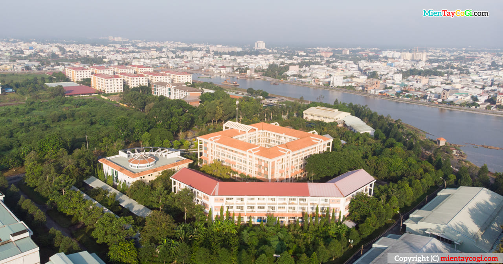

Giới thiệu về Đại học Cần Thơ
Giới thiệu về Đồng Bằng Sông Cửu Long
Đồng bằng Sông Cửu Long (ĐBSCL), có diện tích khoảng 4 triệu hécta đất tự nhiên với trên 17 triệu dân, là vùng sản xuất nông nghiệp lớn nhất cả nước, được ví như vựa lúa của Việt Nam. Ngoài nguồn lương thực, ĐBSCL còn có nguồn lợi về cây ăn quả, thủy hải sản xuất khẩu với trữ lượng lớn và đa dạng về chủng loại Đây là vùng đất mới trù phú, cảnh quan xinh đẹp, cây trái tốt tươi quanh năm.
Trong những năm qua, nhiều chính sách của Đảng và Nhà nước đã tác động tích cực, làm đổi thay lớn về sản xuất và phát triển nông nghiệp ở ĐBSCL mang lại sự thịnh vượng chung cho toàn vùng. Bước vào thiên niên kỷ mới, với yêu cầu Công nghiêp hóa - Hiện đại hóa đất nước, nhiều vấn đề về cơ sở lý luận và thực tiễn khoa học, việc qui hoạch chiến lược phát triển của vùng đặt ra những câu hỏi bức bách cho các nhà khoa học và chính quyền các cấp tham gia nghiên cứu, lý giải nhằm đầu tư, khai thác và sử dụng có hiệu quả nhất nguồn nhân lực và tài nguyên phong phú, đa dạng của vùng.
Đại học Cần thơ
Đại học Cần Thơ (ĐHCT), cơ sở đào tạo đại học và sau đại học trọng điểm của Nhà nước ở ĐBSCL, là trung tâm văn hóa - khoa học kỹ thuật của vùng. Trường đã không ngừng hoàn thiện và phát triển, từ một số ít ngành đào tạo ban đầu, Trường đã củng cố, phát triển thành một trường đa ngành đa lĩnh vực. Hiện nay Trường đào tạo 98 chuyên ngành đại học (trong đó có 2 chương trình đào tạo tiên tiến, 3 chương trình đào tạo chất lượng cao), 45 chuyên ngành cao học (trong đó 1 ngành liên kết với nước ngoài, 3 ngành đào tạo bằng tiếng Anh), 16 chuyên ngành nghiên cứu sinh
ĐHCT tranh thủ được sự hỗ trợ tích cực của chính quyền địa phương ĐBSCL trong các lĩnh vực đào tạo, hợp tác khoa học kỹ thuật và chuyển giao công nghệ. Trường đã mở rộng quan hệ hợp tác khoa học kỹ thuật với nhiều tổ chức quốc tế, trường đại học và viện nghiên cứu trên thế giới. Thông qua các chương trình hợp tác, năng lực quản lý và chuyên môn của đội ngũ cán bộ được nâng cao, cơ sở vật chất, trang thiết bị thí nghiệm, tài liệu thông tin khoa học được bổ sung.
Nhiệm vụ
Nhiệm vụ chính của Trường là đào tạo, nghiên cứu khoa học (NCKH), chuyển giao công nghệ phục vụ phát triển kinh tế - xã hội trong vùng. Song song với công tác đào tạo, ĐHCT đã tham gia tích cực các chương trình NCKH, ứng dụng những thành tựu khoa học kỹ thuật nhằm giải quyết các vấn đề về khoa học, công nghệ, kinh tế, văn hoá và xã hội của vùng. Từ những kết quả của các công trình NCKH và hợp tác quốc tế, Trường đã tạo ra nhiều sản phẩm, qui trình công nghệ phục vụ sản xuất, đời sống và xuất khẩu, tạo được uy tín trên thị trường trong nước và quốc tế.
Khu II, đường 3/2, P. Xuân Khánh, Q. Ninh Kiều, TP. Cần Thơ.
Điện thoại: (84-292) 3832663; Fax: (84-292) 3838474; Email: dhct@ctu.edu.vn.
Kết nối CTU: